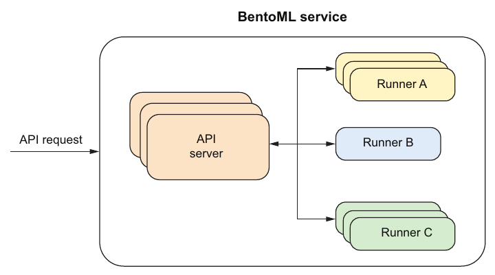
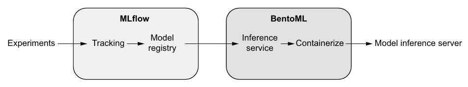

فصل ۱۰ · صص. ۲۹۹–۳۲۴
inference و serving مدل
Model inference and serving
Machine Learning Platform Engineering, 1st Edition
با pipeline آموزش و اعتبارسنجی آماده، مدل باید بهصورت سرویس در دسترس قرار گیرد (ص. ۲۹۹). فصل با deploy خودسرویس شروع میکند: data scientist مدل را در محیط غیر production خودش deploy میکند، بیآنکه نیاز به مهندس deploy در production از بین برود (صص. ۳۰۰–۳۰۱). بعد فهرست پیچیدگیهایی را میدهد که ML به deploy نرمافزار اضافه میکند (صص. ۳۰۱–۳۰۲). هستهی فصل ساختن یک BentoML Service برای YOLOv8 است: API server و runner، endpointهای /inference و /render، فراخوانی ناهمزمان با await، چند runner برای پیشپردازش یا مقایسهی دو مدل، و probeهای سلامت و متریک Prometheus آماده (صص. ۳۰۳–۳۱۵). سپس Bento ساخته و containerize میشود (صص. ۳۱۵–۳۱۸). برای recommender، مدل با alias prod از MLflow بار میشود (صص. ۳۱۸–۳۲۱). فصل با دو جایگزین تمام میشود: فقط MLflow، و KServe (صص. ۳۲۱–۳۲۴).
فهرست خود فصل (از فهرست مطالب کتاب)
- ۱۰.۱ deploy مدل سخت است — ص. ۳۰۱
- ۱۰.۲ ابزار BentoML: ساده کردن deploy مدل — ص. ۳۰۲
- ۱۰.۳ گشتی سریع در BentoML — ص. ۳۰۳
- ۱۰.۳.۱ service و runnerها در BentoML — ص. ۳۰۳
- ۱۰.۴ اجرای محلی BentoML Service — ص. ۳۰۶
- ۱۰.۴.۱ بار کردن مدل با runner در BentoML — ص. ۳۰۶
- ۱۰.۵ ساختن Bento: بستهبندی سرویس برای deploy — ص. ۳۱۵
- ۱۰.۵.۱ tagهای Bento: نسخهگذاری و مدیریت — ص. ۳۱۶
- ۱۰.۶ ترکیب BentoML و MLflow برای inference — ص. ۳۱۸
- ۱۰.۷ ساختن سرویس inference فقط با MLflow — ص. ۳۲۱
- ۱۰.۸ ابزار KServe: جایگزینی برای BentoML — ص. ۳۲۲
از کتاب
مقدمه
روی نقشهی ذهنی، این فصل گام deploy مدل و در دسترس گذاشتن آن است (ص. ۳۰۰). دو مدل فصلهای ۸ و ۹، اول محلی و بعد در container، deploy میشوند (ص. ۲۹۹).
از کتاب
۱۰.۱ deploy مدل سخت است
کار deploy نرمافزار خودش پیچیده است: version control، آزمونها، CI و CD (ص. ۳۰۱). ML اینها را اضافه میکند (صص. ۳۰۱–۳۰۲):
| چالش | پرسش |
|---|---|
| الگوی inference | batch، بلادرنگ یا هر دو؟ |
| scale | بار متغیر را چطور تحمل کنیم؟ |
| مانیتورینگ | کارایی و drift را چطور بپاییم؟ |
| یادگیری پیوسته | retrain و deploy خودکار نسخهی بهتر؟ |
| وابستگی داده | همان پیشپردازش آموزش در serving تکرار میشود؟ |
| سختافزار | GPU لازم است؟ |
| نسخهی مدل | چند نسخه و rollback؟ |
| explainability | تصمیم مدل را در صنعتهای قانونمند چطور توضیح دهیم؟ |
| امنیت و حریم خصوصی | مدل اطلاعات حساس نشت نمیدهد و در برابر حملهی adversarial مقاوم است؟ |
از کتاب
۱۰.۲ ابزار BentoML: ساده کردن deploy مدل
ابزار BentoML برای پر کردن فاصلهی ساخت و deploy است: serving یکسان برای هر framework، batch و بلادرنگ، scale روی Kubernetes، مانیتورینگ و logging، نسخهگذاری مدل، build تکرارپذیر، adaptive microbatching برای دسته کردن خودکار درخواستها، و کنترل ریز منابع (صص. ۳۰۲–۳۰۳).
۱۰.۳ گشتی سریع در BentoML
۱۰.۳.۱ service و runnerها در BentoML
صص. ۳۰۳–۳۰۶

| چند API server | فایده |
|---|---|
| scale افقی | بار و درخواستهای همزمان بیشتر |
| load balancing | هیچ نمونهای گلوگاه نمیشود |
| پردازش موازی | پاسخ سریعتر |
بر پایهی p. 304. دو endpoint سرویس YOLOv8: /inference که JSON برمیگرداند و برای ماشین است، و /render که تصویر با جعبه و برچسب و احتمال را برمیگرداند و برای debug و نمایش است (صص. ۳۰۴–۳۰۶).
۱۰.۴ اجرای محلی BentoML Service
۱۰.۴.۱ بار کردن مدل با runner در BentoML
صص. ۳۰۶–۳۱۵- کلاس
YOLOv8Runnableازbentoml.Runnableارث میبرد و مدل را در constructor بار میکند؛ این سادهترین راه است و registry مدل BentoML بار کردن پویا و نسخهگذاری را میدهد (صص. ۳۰۶–۳۰۷). - عبارت
@bentoml.Runnable.method(batchable=False)متدی میسازد که از راه دور فراخوانی میشود؛ به runner نام بدهید چون نام پیشفرض، یعنی نام کلاس، در log گنگ است (ص. ۳۰۷).
sequenceDiagram
participant C as کلاینت
participant A as API server
participant R as runner
C->>A: تصویر به /inference
A->>R: async_run([تصویر])
Note over A: await — server به درخواستهای دیگر میرسد
R-->>A: نتیجهی تشخیص
A-->>C: JSONنمودار vault از pp. 308–309.
چند runner: یک runner تبدیل به خاکستری، و دو تشخیصدهنده که با asyncio.gather موازی روی همان تصویر اجرا میشوند و نتیجهها با کلیدهای model_a و model_b برمیگردند (صص. ۳۰۹–۳۱۰).
فهرست endpointهای observability (صص. ۳۱۳–۳۱۴):
| endpoint | چه کسی صدا میزند | اگر شکست بخورد |
|---|---|---|
/healthz | liveness probe | Kubernetes ممکن است pod را restart کند |
/readyz | readiness probe | pod ترافیک نمیگیرد |
/metrics | Prometheus | — |
ابزار BentoML همه را آماده میدهد تا کد تکراری ننویسید (ص. ۳۱۳).
API پیشبینی stack مرجع روی Kubernetes است و Prometheus آن را scrape میکند.
?نوبت شما · pod تازهی API پیشبینی بالا میآید و بیست ثانیه طول میکشد مدل را از MLflow دانلود کند. در این مدت چند درخواست با خطای ۵۰۰ برمیگردد. کدام probe کتاب این را حل میکند و چطور؟دیدن پاسخ
readiness probe روی /readyz؛ pod تا آماده نشده ترافیک نمیگیرد (ص. ۳۱۳). liveness فقط میگوید pod زنده است و در اینجا کمکی نمیکند؛ اگر liveness را روی آماده بودن مدل بگذارید، Kubernetes pod را در حین بار کردن restart میکند.
از کتاب
۱۰.۵ ساختن Bento: بستهبندی سرویس برای deploy
فایل bentofile.yaml فایل service، فایلهای لازم و base image را مشخص میکند و bentoml build یک Bento با tag یکتا میسازد؛ bentoml containerize آن را image میکند و docker run آن را روی پورت ۳۰۰۰ با صفحهی API آشنا بالا میآورد (صص. ۳۱۵–۳۱۸).
۱۰.۵ ساختن Bento: بستهبندی سرویس برای deploy
۱۰.۵.۱ tagهای Bento: نسخهگذاری و مدیریت
صص. ۳۱۶–۳۱۸میشود فقط yolo_v8 نوشت، ولی مثل tagهای Docker بهتر است tag صریح بدهید: برای نسخهگذاری، deploy یکسان نسخهی درست در محیطها، و تکرارپذیری (ص. ۳۱۶).
از کتاب
۱۰.۶ ترکیب BentoML و MLflow برای inference


سرویس recommender URI آخرین مدل با alias prod را از MLflow میگیرد، دانلود و serve میکند؛ در pipeline میشود کلاینت MLflow را حذف کرد و URI را ورودی گام قبل گرفت (ص. ۳۲۰). بدون BentoML باید API server سفارشی، endpointهای سلامت و مانیتورینگ و batching و مدیریت GPU را خودتان مینوشتید (ص. ۳۲۰). مزیت واقعی به تجربهی نویسندگان: بالا آوردن سریع مدل staging روی ماشین توسعه، و A/B test بین مدل pipeline خودکار و مدلی با پیشپردازش متفاوت (صص. ۳۲۰–۳۲۱).
از کتاب
۱۰.۷ ساختن سرویس inference فقط با MLflow
ابزار MLflow هم مدل ثبتشده را با یک فرمان serve میکند، با /health و /invocations؛ Kubernetes نمیخواهد و برای teamهایی که سادگی را ترجیح میدهند مناسب است (صص. ۳۲۱–۳۲۲).
از کتاب
۱۰.۸ ابزار KServe: جایگزینی برای BentoML
ابزار KServe همراه Kubeflow است و مدلها را بهصورت microservice Kubernetes deploy میکند: یک namespace، یک InferenceService که CRD هستهی KServe است، و پس از آماده شدن، یک URL (ص. ۳۲۲).
| ویژگی | KServe | BentoML | MLflow |
|---|---|---|---|
| تمرکز | ارکستراسیون serving | deploy و serving ساده | کل چرخهی عمر ML |
| framework و cloud | آزاد | آزاد | آزاد |
| بومی Kubernetes | بله | نه | نه |
| سهولت | کمتر؛ دانش Kubernetes لازم | بیشتر | بیشتر |
| experiment tracking | نه | نه | بله |
از جدول ۱۰.۱ (ص. ۳۲۳).
stack مرجع یک API پیشبینی ساده دارد و team کوچک است.
?نوبت شما · team میخواهد دومین مدل، تشخیص تراکنش مشکوک، را اضافه کند و بحث این است که KServe نصب شود یا همان الگوی موجود ادامه یابد. معیار کتاب برای این انتخاب چیست؟دیدن پاسخ
تخصص team، زیرساخت و نیاز پروژه (ص. ۳۲۳). KServe کنترل ریز و scale بومی Kubernetes میدهد ولی دانش Kubernetes بیشتری میخواهد و آزمودن مدل را برای توسعهدهنده سختتر میکند (ص. ۳۲۲)؛ با یک team کوچک و دو مدل، ادامهی الگوی سادهتر معمولاً منطقیتر است.
مرور
بدهبستانها در یک نگاه
| انتخاب | چه میدهد | چه میگیرد |
|---|---|---|
| deploy خودسرویس | سرعت و تکرار | مهندس deploy برای production هنوز لازم است (ص. ۳۰۱) |
| مدل در constructor runner | ساده | بینسخهگذاری پویا (ص. ۳۰۶) |
async_run با await | server پاسخگو | باید ناهمزمانی را درست فهمید (صص. ۳۰۸–۳۰۹) |
| چند runner | پیشپردازش جدا، مقایسهی موازی | منابع بیشتر (صص. ۳۰۹–۳۱۰) |
| BentoML و MLflow | تجربهی خوب برای هر دو نقش | دو ابزار و جابهجایی بینشان (ص. ۳۲۱) |
| فقط MLflow | ساده، بیKubernetes | گزینههای deploy و مانیتورینگ کمتر (ص. ۳۲۲) |
| KServe | بومی Kubernetes، scalable | دانش Kubernetes لازم (ص. ۳۲۲) |
مرور
نکتههای کلیدی
- روش deploy خودسرویس خطای دستی را کم میکند، deployپذیری را زود ثابت میکند، سختافزار قویتر را در دسترس میگذارد، انتظار برای مهندس ML را حذف میکند و همکاری را بهتر میکند (صص. ۳۰۰–۳۰۱).
- دنیای ML به deploy نرمافزار پیچیدگی تازه اضافه میکند: الگوی inference، scale، مانیتورینگ و drift، یادگیری پیوسته، وابستگی داده، سختافزار، نسخهی مدل، explainability، مدیریت منابع، امنیت و حریم خصوصی (صص. ۳۰۱–۳۰۲).
- هر service یک یا چند API server و یک یا چند نوع runner را در بر میگیرد؛ API server ورودی را parse و اعتبارسنجی میکند و runner inference را در worker Python خودش اجرا میکند (صص. ۳۰۳–۳۰۴).
- کلیدواژهی
awaitرویasync_runحیاتی است: بیآن، کد با یک وعدهی نتیجه ادامه میدهد، نه خود نتیجه؛ با آن، server در این فاصله به درخواستهای دیگر میرسد (صص. ۳۰۸–۳۰۹). - چند runner در یک service برای پیشپردازش جدا، مثل تبدیل به خاکستری، یا اجرای موازی دو مدل با
asyncio.gatherاست (صص. ۳۰۹–۳۱۰). - ابزار BentoML probeهای liveness و readiness و متریک Prometheus را آماده میدهد؛ liveness پاسخ ندهد، Kubernetes pod را restart میکند؛ readiness پاسخ ندهد، ترافیک نمیگیرد (صص. ۳۱۳–۳۱۴).
- هر Bento را مثل image Docker با tag صریح بسازید، برای نسخهگذاری، deploy یکسان و تکرارپذیری (ص. ۳۱۶).
- انتخاب ابزار به team بستگی دارد: KServe بومی Kubernetes و scalable ولی دانش Kubernetes میخواهد؛ BentoML ساده است؛ MLflow کل چرخهی عمر را دارد (صص. ۳۲۲–۳۲۴).
تمرین
خودتان را بسنجید
پرسشها و پاسخها مال vault است و از روی یادداشتهای بالا نوشته شده؛ پاسخها به صفحههای کتاب ارجاع میدهند.
۱کار API server و runner در یک BentoML Service چیست؟دیدن پاسخ
API server درخواست HTTP را میگیرد و ورودی را parse و اعتبارسنجی میکند؛ runner مدل را در worker Python خودش دارد و inference را اجرا میکند (صص. ۳۰۳–۳۰۴).
۳دو کاربرد چند runner در یک service کداماند؟دیدن پاسخ
پیشپردازش جدا، مثل تبدیل تصویر به خاکستری پیش از تشخیص، و آزمودن همزمان دو نسخهی مدل روی یک ورودی با asyncio.gather (صص. ۳۰۹–۳۱۰).
۵طبق جدول ۱۰.۱، کدام ابزار experiment tracking دارد و کدام بومی Kubernetes است؟دیدن پاسخ
MLflow experiment tracking دارد؛ KServe بومی Kubernetes است (ص. ۳۲۳).
مکمل
فراتر از کتاب
مکمل vault، نه از متن کتاب.
- این فصل با BentoML 1.1.6 نوشته شده (ص. ۳۰۳)؛ در BentoML 1.2 به بعد
RunnableوRunnerبه کلاسهایی با@bentoml.serviceتبدیل شدهاند، ولی جدایی API server از workerهای inference همان است. - سازوکار startup probe در Kubernetes برای همین حالت مدلی است که بار کردنش طول میکشد: تا وقتی پاس نشده، liveness و readiness اجرا نمیشوند.
قدمهای بعدی
ادامه بدهید
پیوندها
- فصلهای مرتبط: فصل ۶: بردن مدلهای ML به production که Bento را با Yatai deploy کرد، فصل ۹: آموزش و اعتبارسنجی مدل: بخش ۲ که alias
prodرا ساخت، و فصل ۱۱: مانیتورینگ و explainability که همین سرویسها را با متریک سفارشی و هشدار میپاید.